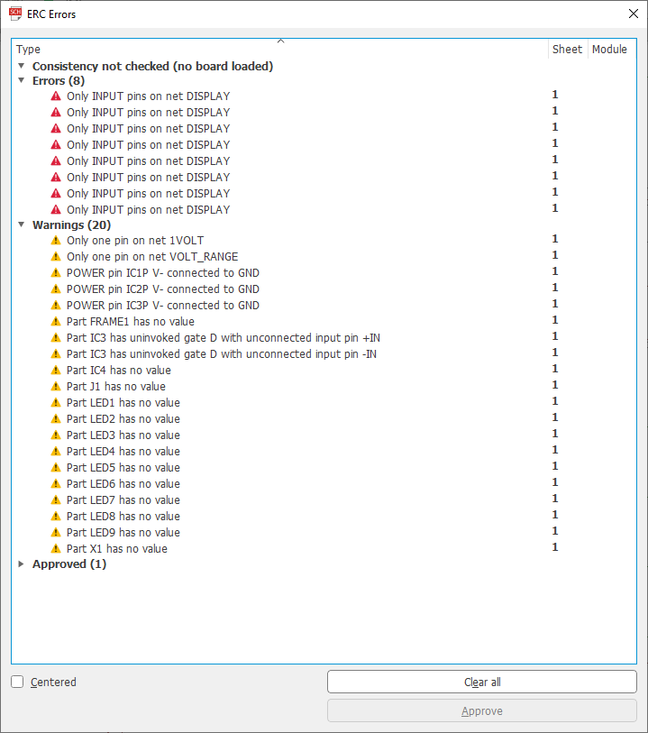
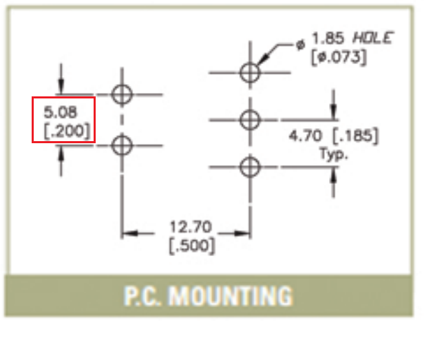
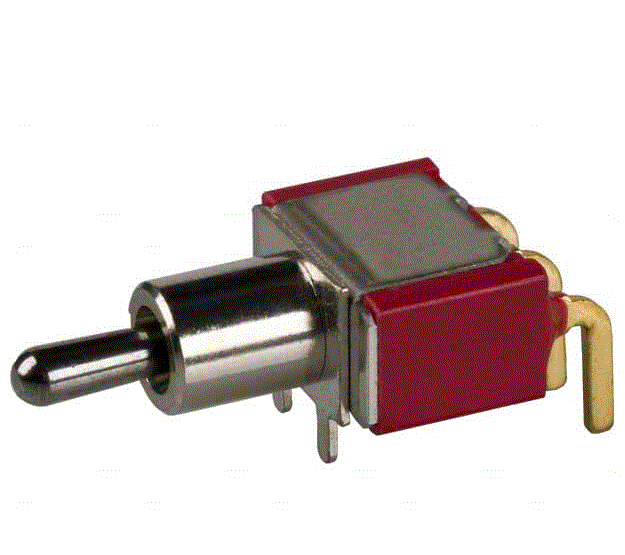
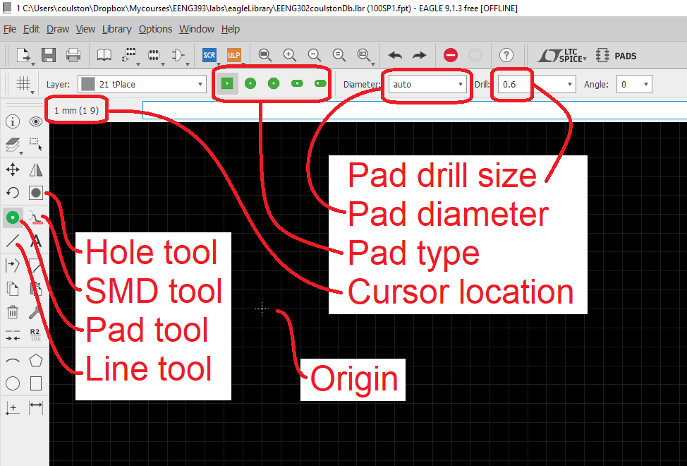
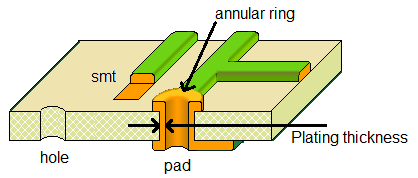
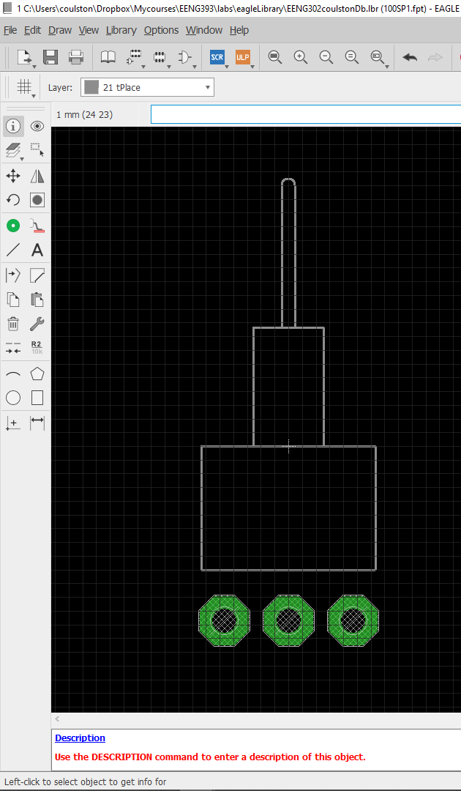
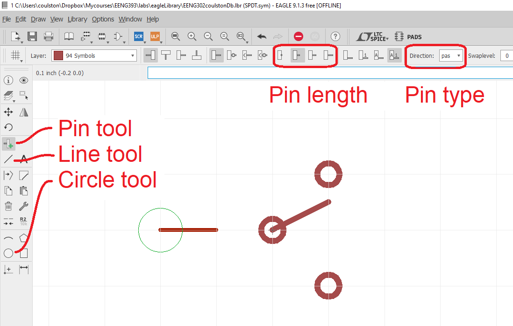
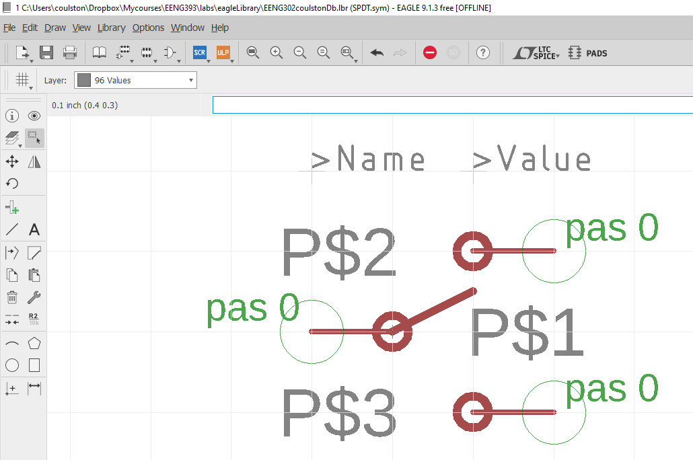
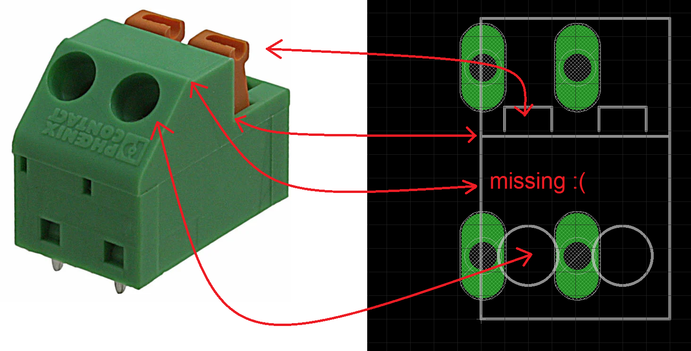
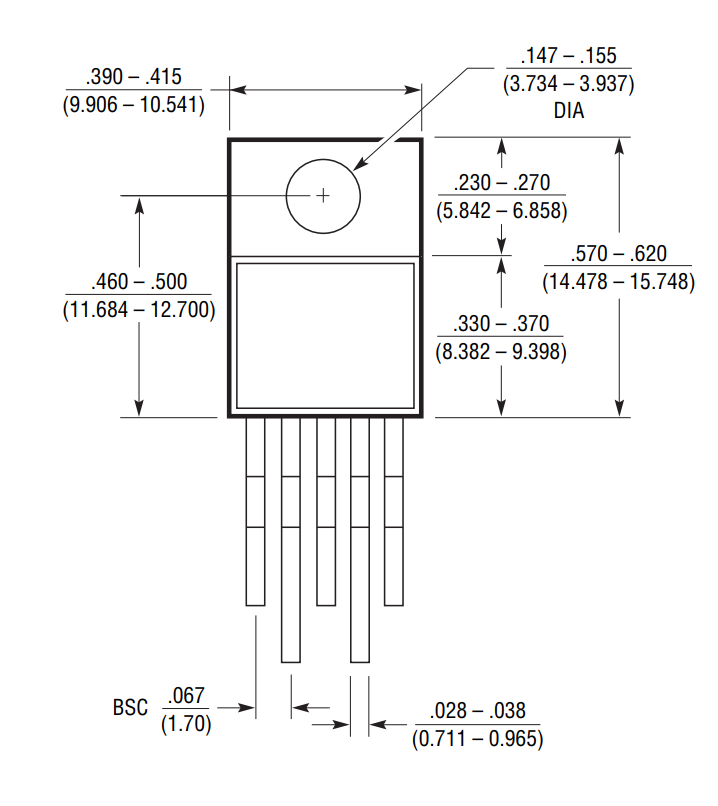

EENG 393
In Lab 7 - EAGLE schematic → layoutRequirements
There is no turn-in associated with this inLab. You will need to follow the instructions given below in order to create the footprint for the LT3080. Since each student needs to build their own layout for your own PCB, you should complete the walk-through in this lab on your own. When you complete this walk-through you will have built one of the footprints that is due in the next lab.Objective
Objectives- Nets, display name, air wires,
- The information tool,
- Packages,
- EAGLE files,
- ERC,
- Devices with multiple circuits,
Copy Lab 6 EAGLE files into Lab 7
I would like to you to keep a copy of the work completed so far in lab06 and use it as a starting point for lab07. To do this:- Create a lab07 folder,
- Launch EAGLE CAD,
- Navigate to the lab06 directory so that you can see the orange "E" for lab06,
- Right mouse click on the orange "E" to the left of lab06,
- Select Copy
- In the Copy directory pop-up, navigate into the lab07 directory,
- Click "Select Folder",
- In the Control Panel, right mouse click on the orange "E" to the left of lab06 (in the lab07 project),
- Select rename,
- Change the name of the project to lab07
- Rename lab06.sch to lab07.sch in the same way,
- You can delete lab06.pdf by right mouse clicking on it and selecting delete.
Electrical Rule Check
To some extent, EAGLE CAD has built-in error checking that can help you identify errors early in the design phase. Let's give it a try with the circuit you built this past week. Click Tools → ERC. This will produce ERC Errors pop-up that looks like the following:
Double click on any of the errors and your window will be centered on the error with a black pointer highlighting the error. The list of errors and warnings in the image above are all safe to ignore.
- The errors all indicate that the DISPLAY net has no signal driver - you will add that in a coming lab.
- The first two warnings indicate that these two nets are not connected to a second device - you will do that in a coming lab,
- The next three warnings are informing you that pins labeled V- are normall connected to a negative suppply, not ground.
- You could give the FRAME (and a lot of other parts) values.
- The next two warnings tell us that we have an unconnected op-amp inside the TLC274P (not a best practice).
If you have any additional errors, you will need to fix them before moving on.
You can clear all the electrical errors and warning using the Clear all button and then close the window. Now let's create a real electrical error and see what it looks like…
Create the SP100 Switch in EAGLE
Let's build a footprint for the ON/OFF switch from the information in the device's technical documents. To get the technical documents:- Go to Digikey.com,
- search for EG2362-ND
Go to page 1 of the technical documents and use the part number of the switch, 100SP1T2B4M6QE, to determine the TERMINATION type. Then go through the datasheet to the begining of the TERMINATION OPTIONS section. Then look through this section till you find the SPDT switch that we are using as the on/off switch. There are several views, but the one we are interested in is the P.C. MOUNTING. I've isolated this image below along with the actual switch. Note that the pair of holes on the left of the P.C. MOUNTING diagram are non-electrical pins, used to provide mechanical stability for the switch. The three gold pins in the rear of the switch are the electrically conducting elements.
Each measurement in the P.C. MOUNTING diagram has a bunch of difference numbers associated with it. You will have to makes sense of these in order to build a valid footprint.
|  |  |
- Scroll through the other pages of the document looking at other mechanical diagrams and look for text related to units. Usually, the documents are consistent in their use of units through a document. Unfortunatly, there is nothing in this document that helps us.
- Metric units are almost always in millimeters and
imperial units are always in units of inches. Since there
are 25.4mm per inch, I try multiplying one of the values
by 25.4 to get the other.
Let's use the pair 0.200 and 5.08 circled in red in the image above and determine which is imperial and metric. I do this by first assuming that 0.200 is in inches and converting it into millimeters. I then assume that 0.200 is in mm and convert it to inches. Then whatever conversion results in 5.08 is the correct starting point.25.4 mm 0.200 inches * ------- = 5.08 mm 1 inch 1 inch 0.200 mm * ------- = 0.0079 in 25.4 mm
So it looks like the distance between the pins in 0.2" or 5.08mm - Most electronics packages are standardized, so you may be able to find a separate resource that more clearly defines the units. For example, go to the Wikipedia web page for Small-outline transistors (this will help with you build the footprint for the LT3080 which is a SOT223). Unfortunatly, switch footprints are seldom standardized.
- If I do not have the physical package to measure (see below),
I have been known to infering an unknown dimension in a mechanical
diagram using the size of the part on the screen. For example,
the width of the switch, A in the figure below, is not given.
To figure out this dimention, I broke out my machinst ruler and
measured the pitch of the rear two pins (shown as being 4.7mm
apart) with my ruler to be 16mm. I then measured the width of
switch to be 44mm.
4.7 actual mm switch width --------------- = ------------- switch width = 12.65 16 measured mm 44 measured mm
I probablly will round this to 12.54mm because that is a perfect 0.5" - As a last resort, I grab a measuring device and measure the physical package. For this I find my digital vernier's to be the best tool for the job. If you do any amount of PCB layout seriously considering purchasing a $40 pair from a company like TechniTool. The only drawback with this method is that you need the part in your hands before you can start drawing the footprint and there will be times when you have to layout a part without having it in your hands.
Now that we understand the unit dimensions, let's make a small sketch that will help us create the footprint. Do this by completing the pair of tables that follow.

| Dimension | Name | Value (mm) | Value (inch) |
| A | Body Width | ||
| B | Body Length | ||
| C | Pin offset | ||
| D | Half Pin pitch | ||
| E | Pin diameter | ||
| F | Half Pin Pitch | ||
| G | Panel Mnt diameter | ||
| H | Switch Length |
| Pin | Hole/Pad | Location (mm) | Location (inch) |
| 1 | |||
| 2 | |||
| 3 | |||
| 4 | |||
| 5 |
Create a library
- Close the lab07 project,
- From the Control Panel select File → New → Library
- In the Library Editor pop-up select File → Save
- In the Save-As pop-up enter your last name as the File name,
- Click Save.
Create a new package
EAGLE CAD calls footprints, packages. So let's create a package for our SP100.- Click Library → Manage packages …
- In the Edit pop-up Enter "SP100" in the New Footprint Name field,
- Click OK
- In the Warning pop-up, click Yes to create a new package,

Draw the outline
The outline of a footprint serves much more than an aesthetic role on a PCB design. A well drawn outline provides needed information to the layout engineer so they position the component effectively and information to the assemblers so they can correctly install components. To start your outline, configure EAGLE as follows:- Click view → grid,
- In the Grid pop-upi:
- Display: On
- Style: Lines
- Size: 0.2 mm
- Multiple: 1
- Alt: 5
- Click OK
- Select the Line tool,
- Make sure that layer 21 tPlace is selected
- Start drawing the outline.
- I would suggest that you start at the origin and build away from it.
- Use the information tool (circle icon with "i" in it) to position segments exactly where I want them. In the image below, I am positioning the right side of the barrel which holds the switch.

Add Pads, Holes and SMT pads
The next step in the creation of a footprint is adding the electrical (pads and smt) and physical (hole) connections to the PCB. You will make electrical connections to the PCB using pads and smt. Holes are needed for devices which are subject to mechanical stresses like a mounting holes, USB connector or switches. Holes do not have electrical connections.
The major difference between holes and pads is the presence or absence of through-hole plating. Through-hole plating is the process by which a conductive plating is added to the sides of the drill hole and extends to the top and bottom surface of the PCB. This conductive plating serves many useful purposes, creating a large solder area between the PCB and the leaded components and allowing traces on the top and bottom sides to be connected through the hole.
A drill hole that has conductive plating added is called a plated through hole, PTH for short. The plating inside the hole has some thickness which reduces the usable diameter of the hole. In EAGLE you specify a "drill" diameter which is the finished diameter of the hole in the PCB. If this is a PTH then it is up to the PCB manufacturer to over-drill the diameter of the hole so that after plating the finished hole diameter matches the value that you specified in your EAGLE file. In other words, you, as the PCB designer, do not have to concern yourself with the thickness of the plating in a PTH. In order to allow an electrical connection to a PTH, the top and bottom of the PTH is connected to a donut shaped conductive region called the annular ring. The annular ring will not be covered in solder mask making it the point where leaded components are soldered into the PCB. When you add a pad to your footprint you can select Diameter and a Drill size. The Diameter size is the diameter of the annular ring. The Drill size is the diameter of the finished hole.
When building a footprint for a device you will need to specify both the Drill and Diameter (for a pad). The best case is one where the mechanical drawing will provide all the needed information. For example, in the image below, you can see the informative mechanical drawing for the SPDT switch you will be building for this week's lab as shown in the image below.
Before moving on, let's make a few observations. First, note that the drill diameter is given by the symbol Φ (a common convention).
Second, the dimensions are given in both metric and imperial units, metric on top and imperial on the bottom. For example, the drill diameter is given as 1.85 and 0.073. You should be able to figure out that the units for 1.85 are millimeters because there are 25.4 mm in 1 inch and 0.073 in * (25.4 mm / 1 in) = 1.85 mm.
The solder pad is the green area surrounding the drill hole that is used during assembly to solder the component lead to the PCB. Normally leaving the size of the solder pad assocaited with a drill hole set to "automatic" is a fine choice. However, whenever possible I make the solder pads as large as possible to make soldering easy. That said, don't make your solder pads so large that they overlap other pads or make routing unduely difficult.
A drill hole without conductive plating is called a "hole" in EAGLE. In order to better assure that a hole does not make electrical contact with the copper layers on the top and bottom of the PCB, you should make sure there is a keepout region (layer 39 or 40) on the top and bottom layer of the PCB. A keepout does just what its name implies, it keeps out copper pour. A keepout should be between 10 - 20% larger that the diameter of the drill hole. Like plated through holes, I like to make drill hole diameters 10 - 20% larger than the size of the object going through the hole.
Finally SMT pads are provided by EAGLE in order to attached surface mount devices of the PCB. These SMT pads have an X and Y dimension that needs to be slightly larger than the part being placed. Often the mechanical drawing section of the technical documents will have a recommended footprint for SMT devices. Lacking that, make your SMT pads at least 10% larger than the electrical contact, with 25% larger being an upper bound.
Add the pads
Let's start by placing the pads which wil connected to the conductive terminals of the switch. Do this as follows.- Left mouse click on the pad tool in the leftmost toolbar,
- On the top toolbar, set the pad type to Octogon,
- On the top toolbar, set Drill to 1.85mm (you will need to type this value in),
- On the top toolbar, set the Diameter to 3.5mm,
- To make you life easier, place the pin 1 pad first, and the rest of the pad in numerical order,
- If you are unable to get the pin exactly where you want it, because of the grid resolution, place it as close as possible and fix it with the information tool.
- Select the information tool from the left toolbar,
- Select the center of the pad you want to move,
- In the Properties pop-up, change the position of the pad to its needed position,
- Click OK to complete the change,
- Continue to any other pads that need their positions changed.

Add the holes
Now let's add the holes in the PCB to accomodiate the ipins at the front of the switch which provide mechanical support for the switch as it is being actuated by a user. Do this as follows:- Left mouse click on the hole tool in the leftmost toolbar,
- On the top toolbar, set Drill to 1.85mm (you will need to type this value in),
- Use the information tool to place the holes where needed.
Add the name and value
The parts that you place on the schematic and place on the PCB need unique identifiers so that you can place the correct electrical component in the correct location. In the schematic, an electrical device like a resistor has a name (for example "R4") and a value, (for example "10kΩ). The '>' character before name is a special character that lets Eagle know that this value should be dynamically updated by the program. You specify the default location for these two labels in the package editor using the following instructions.- Select layer 25, tNames
- Click on the text tool
- In the Text pop-up, enter ">Name" the in the "Enter text" area,
- Click OK,
- Set the Size: 0.8128
- Set Font: Vector
- Left mouse click to place text (above the part)
- Press escape,
- Replace text in "Enter text" area with ">Value",
- Click OK,
- Select layer 27, tValues
- Left mouse click to place text (above/right the part),
- Press escape twice to exit from the text tool.

Save
- File → Save
- In the Save as pop-up, click on your library
- Click Save,
- In the Warning pop-up click OK to overwrite the (empty) library.
Create a new Symbol
The symbol is what you see in the schematic when a part is placed.- Library → Manage symbols…
- In the Edit pop-up enter SPDT in the "New Symbol Name" field,
- Click OK
- Click Yes in the Warning pop-up to create a new symbol.

Draw the symbol
- Select the line tool,
- Make sure that layer 94 Symbol is selected
- Use the line tool to draw the moving padel of the switch,
- Use the circle tool to draw the terminals of the switch,
- Select the Pin tool,
- Select short pin length
- Select passive pin type
- Place all three pins,
- Press escape to exit the Pin tool.
- Select the Text tool,
- In the Text pop-up, enter ">Name" in the "Enter text" box,
- Click OK,
- Use the layer tool (upper left) to change the layer to "95 Names"
- Place the text by left mouse clicking,
- Press escape,
- Enter ">Value" in the "Enter text" box,
- Use the layer tool (upper left) to change the layer to "97 Values"
- Place the text near by left mouse clicking,
- Press escape twice to exit.

- Select the Information tool,
- Click on the common pin (labeled "P$1" in the image above),
- In the Properties pop-up change Name to "COM" and change the Visible to pad,
- Click OK
- Change P$2 to SL, pad
- Change P$3 to SR, pad
Create Device
- Library → Manage devices…
- Enter "100SP" in the "New Device Name" text box,
- Click OK,
- Click Yes in the Warning pop-up to create a new device,

- Click the Add Part tool in the left toolbar,
- In the Add pop-up, select the SPDT Symbol,
- Click OK,
- Your cursor will change to the symbol for the SPDT. Place the center of the symbol over the center of the symbol area (designated with a "+"),
- Left mouse click to place the symbol,
- Press escape twice to exit the Add tool,
- Click the New button in the package area, and select Add local package
- In the Create new package variant for the 100SP pop-up, select the 100SP package,
- Click OK,
- Click the Connect button in the package area,

- Select the G$1.COM Pin and the COM Pad, press connect,
- Select the G$1.SL Pin and the SL Pad, press connect,
- Select the G$1.SR Pin and the SR Pad, press connect,
- Click OK,
- In order to have a prefix in front of your part name
(think the "R" in the resistor designator "R6"), then you can
associate one with this device by clicking on the Prefix button
that is on the lower right and below the "New" button you clicked
earlier. Some common prefixes are:
C - capacitor D - diode (including LEDs!) J - header pins or 'jack' connector JP - jumper L - inductor M - motor Q - transistor/FETs R - resistor S - switch (TACT switch, etc.) TP - test point U - integrated circuit (sensors, MCUs, etc.) Y - Crystals or oscillators
- File → Save,
- File → Close.
Add a library
Now let's use that 100SP device in our schematic. First we have to add our new library to the available libraries for our project.- Open lab07 project,
- Open schematic if it has not auto-opened,
- Click the Add part tool,
- Click "Open Library Manager",
- In the Library Manager pop-up, select the Available tab,
- Select your new library,
- Click Use,
- Close Library Manager pop-up (upper right "x"),
- In the ADD pop-up, enter *SP100* in the search bar,
- Hit Enter,
- Select the SP100,
- And place it.
footpring erata
A footprint serves more than just to alert the layout engineer of the physical dimensions of the component. Let's take the Phoenix terminal block used on your power supply and shown in the image below at left. In addition to the outline, the footprint can aide the layout engineer in remembering which side of the terminal block wires connect to and where the user has to press in order to insert and remove wires. These features help the layout engineer position the terminal block so that wires can easily be inserted and that the user can press the button without their fingers being burned by a nearby heatsink. If the mechanical documents lack the specifics on a needed package dimension, do your best to guesstimate the position of a feature. If you think that you need to, make a note of your assumptions in the tDoc or bDoc layer.
As shown in the Phoenix terminal block, other features of the component like the shape of the green plastic may be included. This helps add a level of realism to the device making it easier to identify on a busy PCB layout. Another function of a good outline is to help assemblers install polarized components correctly. Devices like ICs and LEDs need some convenient reference on the PCB to determine the part orientation so that the part can be installed correctly.
Drill hole erata
If the recommended drill size is not given in the mechanical drawing, the next best case is when the dimensions of the leads as provided like they are in the LT3080 mechanical drawing below. In this case, I would make the hole at least 0.84mm in diameter, this bring the average of 0.711mm and 0.965mm.
I typically make the dill size 10 - 20% larger than the average size of the lead that is being placed through it. In the case of the TO-220-5 package this would be 0.84 mm * 1.2 = 1mm. When it comes to the diameter of the annular ring, I like to make them as large as possible to simplify soldering. However, in densely packed PCBs you will be encouraged to keep the annular rings as small as possible so that the PCB can accommodate higher part densities. Note the term "BSC" stands for basic spacing between centers and in this case, is synonymous with pin pitch.